1. สถานะล่าสุดที่ตรวจแล้ว
ตรวจสถานะระบบแล้วตอบกลับปกติ และหน้าใช้งานหลักโหลดได้จาก production
ครอบคลุม Attendance, HR, Billing, CS Queue, Load Plan, Warehouse และโมดูลปฏิบัติการหลัก
ใช้รหัส production ล่าสุดเข้า Admin แล้วแคปภาพหน้าจอจริงครบทุกส่วนหลัก รวม 54 ภาพ และตรวจ path รูปผ่านทั้งหมด
2. หน้าจอจริงหน้าแรกของระบบ
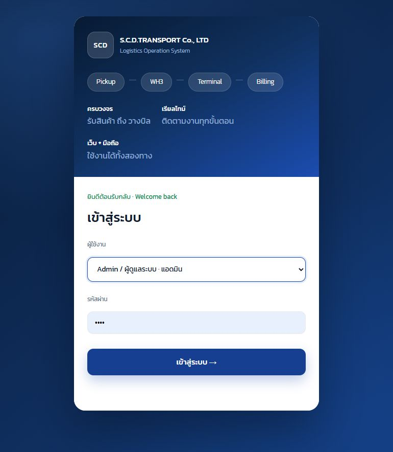
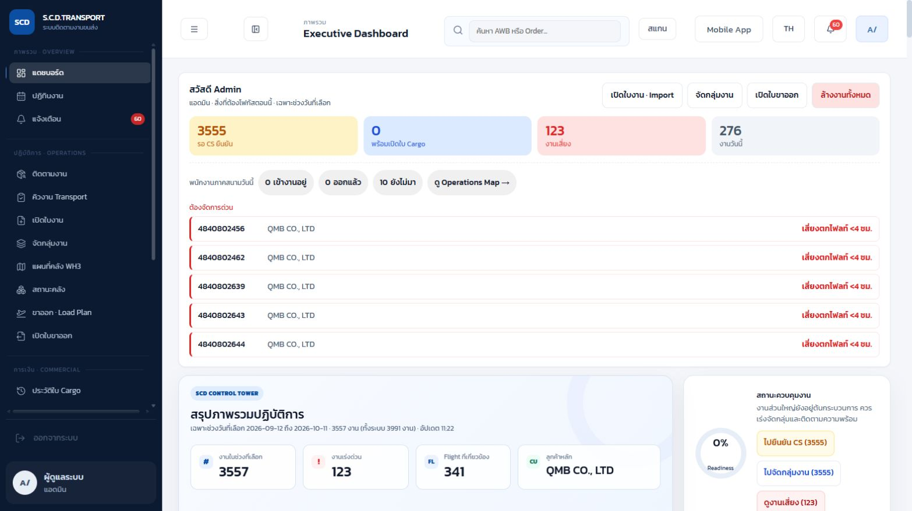
3. สารบัญโมดูล
Checklist ความครบของภาพประกอบ
ตรวจล่าสุดหลังเติมภาพ: ไม่มีช่องภาพตัวอย่างค้างในเนื้อหา และไฟล์รูปที่อ้างถึงมีอยู่จริงครบ 54/54 รูป
| โมดูล | ภาพในหัวข้อโมดูล | ภาพรวม production | หมายเหตุ |
|---|---|---|---|
| Login / สิทธิ์ผู้ใช้ | มี | มี | หน้า login และหลัง login Admin |
| Control Tower / Dashboard | มี | มี | KPI, readiness, risk, flight board |
| Transport / CS Queue / เปิดใบงาน | มี | มี | CS queue, open cargo, grouping |
| Driver Mobile / Field Ops | มี | มี | mobile app และ field ops |
| WH3 รับเข้า / Warehouse Map | มี | มี | warehouse status และ map |
| Load Plan / Outbound / Terminal | มี | มี | load plan, outbound, terminal timeline |
| ปิดจบงาน / Cargo History | มี | มี | tracking UAT และ cargo history |
| Billing / Service | มี | มี | billing workspace และหลังปิด Billed |
| HR / Attendance / Staff / Calendar | มี | มี | HR, attendance map, staff, calendar |
| Settings / System | มีในหัวข้อ 17 | มี | ตั้งค่าระบบและสิทธิ์ role |
4. Flow ใหญ่ตั้งแต่รับสินค้าไปจนวางบิล
5. Login / สิทธิ์ผู้ใช้งาน
หน้าจอแรกก่อนเข้า module ภายใน เลือก user ตาม role แล้วกรอกรหัสผ่าน
ทำอะไรได้
- เลือกผู้ใช้ตาม role: Admin, Executive, Driver, WH3, Transport, Terminal, Billing, CS, EI, Check House
- ใช้ server-side session/token หลัง login
- ซ่อน quick demo login เว้นแต่เปิดโหมดทดสอบด้วย parameter เฉพาะ
- ระบบหลังบ้านรองรับการตรวจสอบ session ก่อนเข้าใช้งานข้อมูลสำคัญ
ต้องระวัง
- รหัสผ่าน production ถูกกำหนดและดูแลโดยผู้ดูแลระบบ
- ควรแยกบัญชีตาม role เพื่อควบคุมสิทธิ์และตรวจสอบย้อนหลังได้
- ไม่ควรเปิดเผยรหัสผ่านในเอกสารประชุมหรือไฟล์ระบบ
6. Control Tower / Dashboard
หน้าภาพรวมสำหรับผู้บริหาร/Admin ใช้ดูสถานะทั้งระบบแบบเร็ว
| ส่วนบนหน้าจอ | ความหมาย | ใช้ตัดสินใจอะไร |
|---|---|---|
| Readiness | คะแนนความพร้อมของงานตามช่วงวันที่ที่เลือก | ดูว่าต้องเร่ง CS, จัดกลุ่มงาน, หรือแก้งานเสี่ยงก่อน |
| KPI งานทั้งหมด / งานเสี่ยง / Flight / ลูกค้าหลัก | สรุปจำนวนงานในช่วงวันที่และสถานะสำคัญ | ใช้เปิดประชุม morning briefing / operation briefing |
| Insight buttons | ปุ่มลัดไป CS Queue, Grouping, Orders, Alerts | ลดเวลาคลิกหาเมนู เมื่อต้องเร่งจัดการงานค้าง |
| Flight Risk Panel | แสดงงานที่ใกล้ cutoff หรือ breached ตาม SLA | เลือกงานที่ต้องรีบส่ง WH3/Terminal ก่อนตกไฟลท์ |
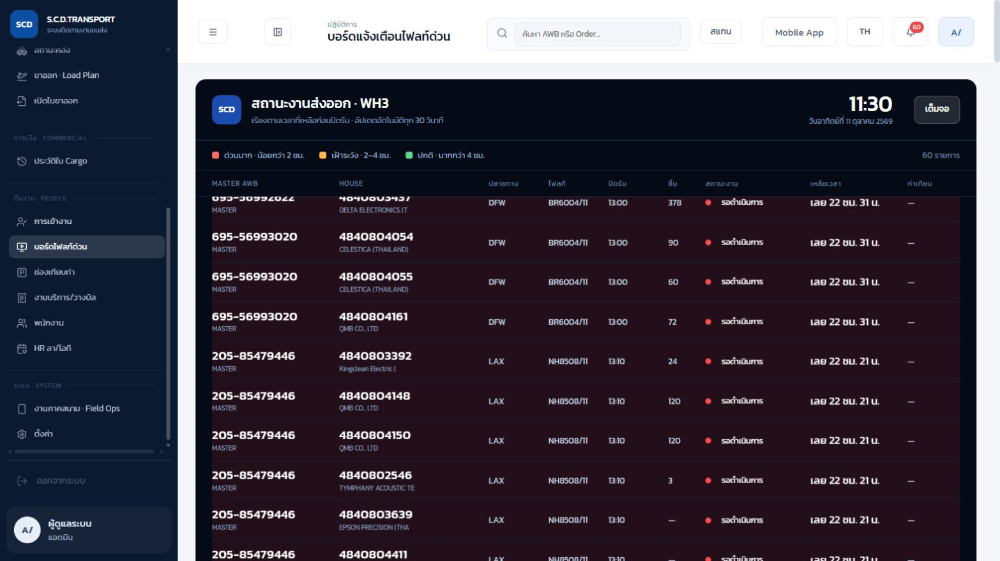
7. Transport / CS Queue / เปิดใบงาน
ส่วนรับงานจากลูกค้าและส่งต่อให้ออกใบ Cargo หลัง CS ยืนยัน
CS Queue ทำอะไรได้
- ดูงานที่รอ CS อนุมัติ/ยืนยัน Invoice กับลูกค้า
- ค้นหาด้วยบริษัท, House, Invoice
- กรองวันที่รับ/วันที่ยืนยัน
- เลือกทั้งกลุ่มตามลูกค้า/วันที่
- แนบหลักฐาน เช่น รูป/ไฟล์ PDF
- ยืนยันรายกลุ่ม หรือปุ่ม “ยืนยันทั้งหมดที่กรอง”
Transport เปิดใบทำอะไรได้
- รับงานที่ CS ยืนยันแล้วเข้าคิวเปิดใบ Cargo
- เพิ่มงานด่วน / Manual job
- Import CSV/XLSX ถ้าระบบเชื่อมเมลหรือ scan ไม่พร้อม
- ตรวจข้อมูล flight, piece, pickup location, customer
- งานที่ยังไม่ผ่าน CS จะถูก lock ไม่ให้ออกใบ Cargo
ถ้า scan ไม่ได้ ใช้พิมพ์แทนได้อย่างไร
- เปิดหน้าคิวงานหรือช่องค้นหา House
- พิมพ์ House / HAWB ลงช่องค้นหาแทนยิง barcode
- เลือกงานที่พบ แล้วทำ action ต่อ เช่น เปิดใบ, จัดกลุ่ม, หรือดู timeline
- หาก House ไม่พบ ให้เพิ่มงานด่วนหรือ import ไฟล์แทน
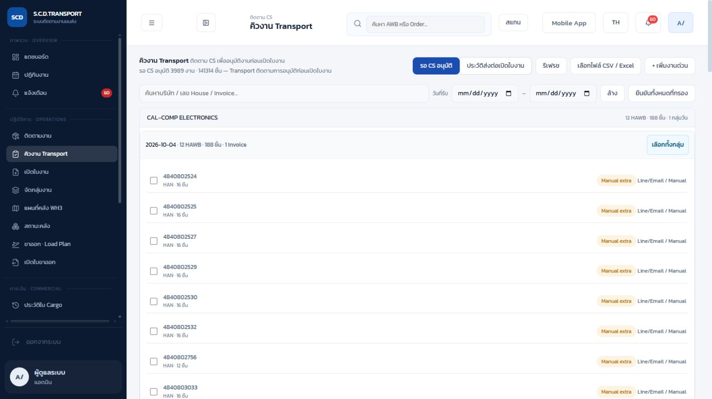
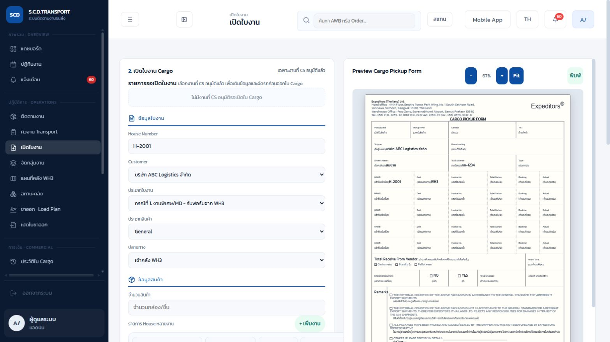
8. Driver Mobile / ขนส่งรับสินค้า
ใช้บนมือถือสำหรับคนขับ ตั้งแต่รับงานถึงกลับ WH3
| ขั้นตอน | หน้าระบบควรเห็น | ข้อมูล/หลักฐานที่เก็บ |
|---|---|---|
| รับงาน | รายการงานที่จ่ายให้คนขับ เลือก House หรือ route | driverId, route, vehicle plate, status Assigned |
| ถึงจุดรับสินค้า | ปุ่มยืนยันถึงจุดรับ / check-in | เวลา, GPS, รูปหน้างานถ้ามี |
| รับสินค้า | Scan House หรือพิมพ์ House เมื่อ barcode อ่านไม่ได้ | รูปสินค้า, รูป Cargo, ลายเซ็น, จำนวนชิ้น |
| โหลดขึ้นรถ | ปุ่มยืนยันโหลดสินค้า / checklist | เวลาโหลด, proof, door closed photo หาก require |
| กลับ WH3 | ปุ่มถึง WH3 / ส่งต่อคลัง | สถานะ ReturningWH3 → AwaitingReleaseDocument / WH3 queue |
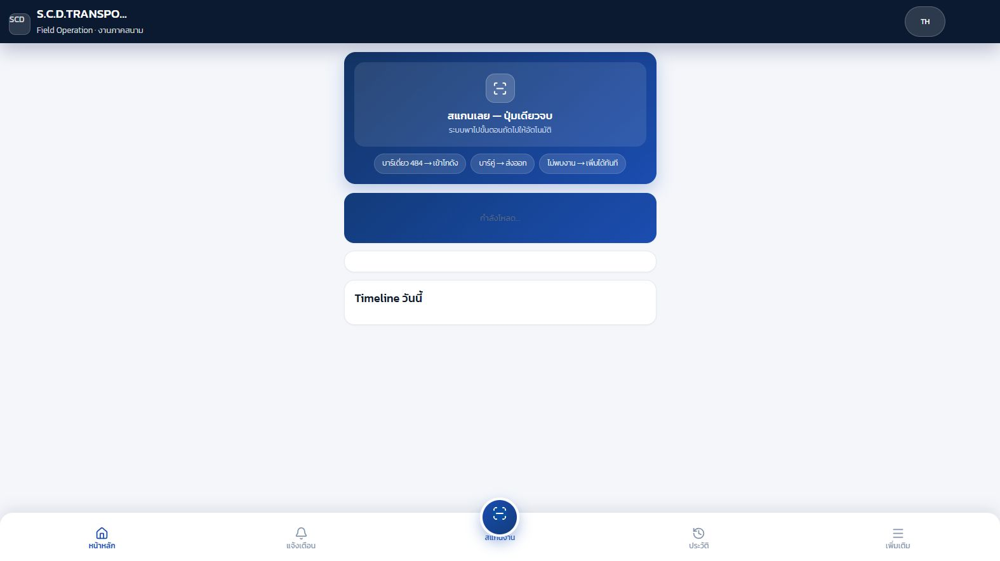
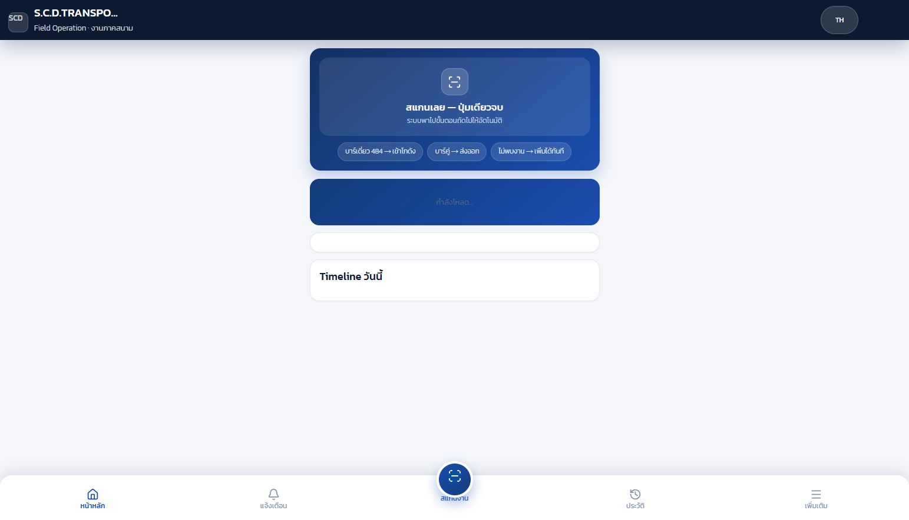
9. WH3 รับเข้า / คลังย้ายสินค้า
คลังรับสินค้าจากขนส่ง ตรวจเอกสาร จัด Location และย้ายสินค้าในคลัง
รับเข้า WH3
- ดูคิวสินค้ากลับ WH3 / รอใบตรวจปล่อย
- ตรวจเอกสาร: Cargo form, รูปสินค้า, release document
- บันทึกสถานะรับเข้า WH3
- เลือก Location หรือ Zone สำหรับเก็บสินค้า
- กรณี scan ไม่ได้ สามารถพิมพ์ House แล้วเลือก location ได้
ย้ายสินค้าในคลัง
- ค้นหา House จาก location เดิม
- สแกน/พิมพ์ House เพื่อยืนยันตัวสินค้า
- กรอก Location ใหม่ แล้วบันทึก move
- ระบบอัปเดตแผนที่/สถานะช่องเก็บ
- เก็บประวัติ movement ใน timeline
Warehouse Layout / Capacity
- รองรับ Zone, Dock, Rack, Storage, Lithium, WD, Small package
- มีสีแสดงว่าง / บางส่วน / เต็ม
- รองรับจองพื้นที่ล่วงหน้าหลัง CS confirm
- รองรับการกำหนดกติกา Dock 1-11 และ capacity ต่อ zone ตามข้อมูลหน้างานจริง
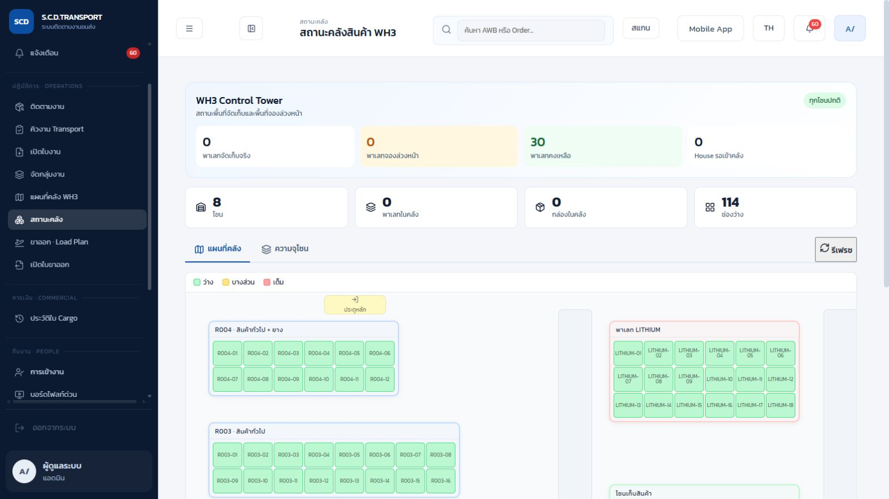
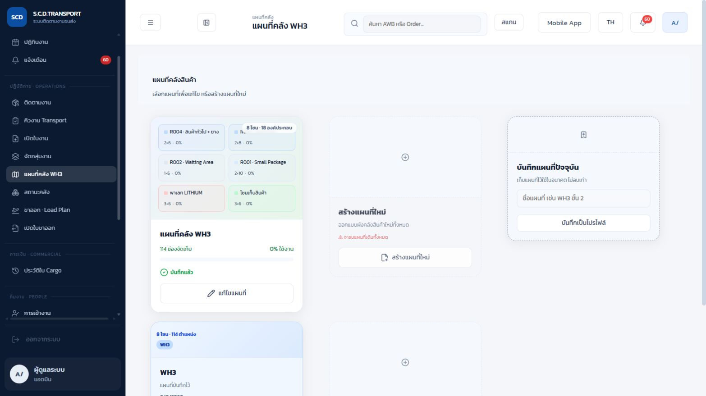
10. คลังเตรียมขนออก / Load Plan / Outbound
ขั้นตอนเตรียมสินค้าออกจาก WH3 ไป Terminal / สนามบิน
| Tab / ขั้นตอน | ทำอะไร | เช็คเอกสารครบไหม |
|---|---|---|
| Admin Docs | เตรียมเอกสารขาออก, เลือกงานจาก queue, ตรวจ Cargo Transfer / Permit | ระบบมีช่องแนบ outbound docs และ note |
| Staff Location | คลังหา location ของ House เพื่อเบิกสินค้าออก | ต้อง scan หรือพิมพ์ House เพื่อยืนยันตัวสินค้า |
| Pick / EI | เบิกสินค้า ตรวจเอกสาร EI/Permit/Cargo Transfer | มีช่องแนบไฟล์และบันทึก note |
| AOT | จองคิวรถ, ใส่ทะเบียนรถ, ชื่อคนขับ, รุ่นรถ, ชนิดรถ, pre-load photo | แยกปุ่มจองคิวและอนุมัติคิว |
| Terminal | บันทึกถึง Terminal, ชั่งน้ำหนัก, dimension, X-Ray / Re-X-Ray, loading detail | ต้องมีน้ำหนัก/เอกสาร terminal ก่อนปิดงาน |
| Close | กรอก Tray/Pallet/Lot และปิดงานพร้อมส่งต่อ Billing | ระบบเปลี่ยนสถานะไป ReadyForBilling/PendingBillingReview ตามเงื่อนไข |
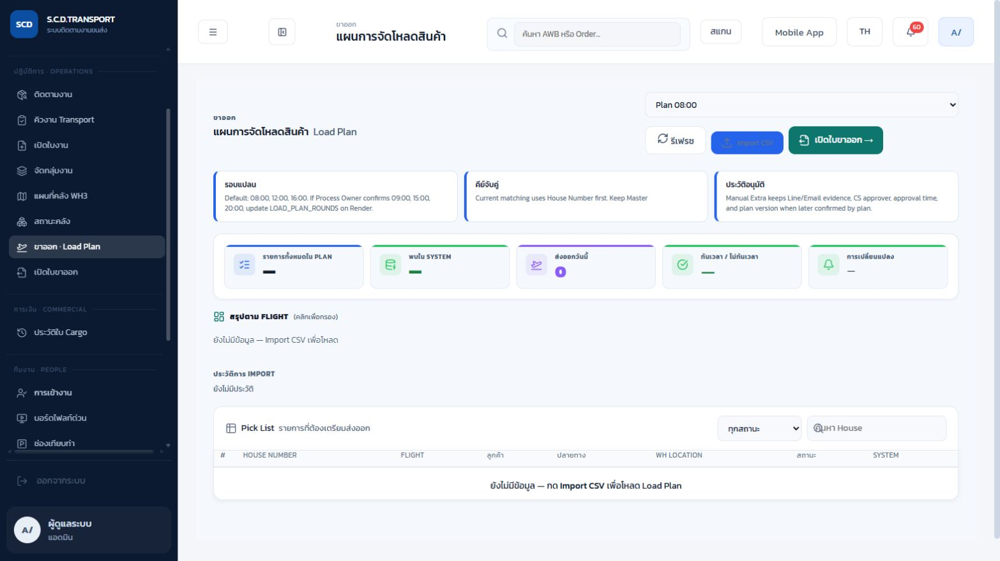
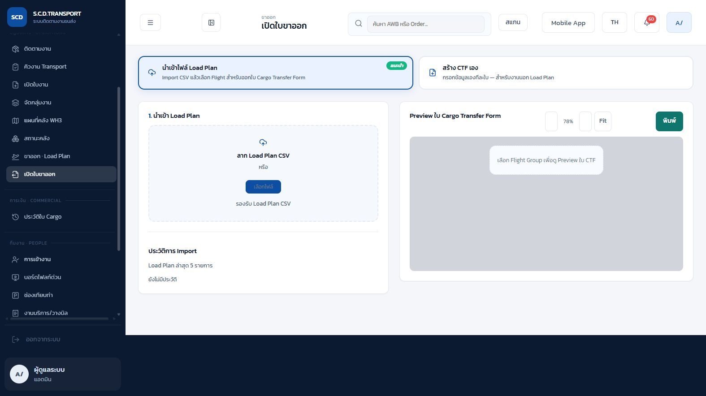
11. Terminal / ชั่งน้ำหนัก / Scan / X-Ray
การส่งเข้า Terminal และเก็บหลักฐานก่อนปิดงาน
ระบบเก็บอะไรได้
- เวลารถถึง Terminal
- น้ำหนัก เช่น 25.5 kg
- Dimension / weight slip
- X-Ray passed / Re-X-Ray required
- Loading detail completed
- Terminal workflow events
ถ้า scan ไม่ได้
- พิมพ์ House ในช่อง terminal/outbound scan input
- เลือกงานจาก queue แล้วทำ action ต่อ
- แนบรูปเอกสารแทนการ scan หลักฐานได้
- บันทึก note ระบุว่า manual input เพราะ scan ไม่ได้
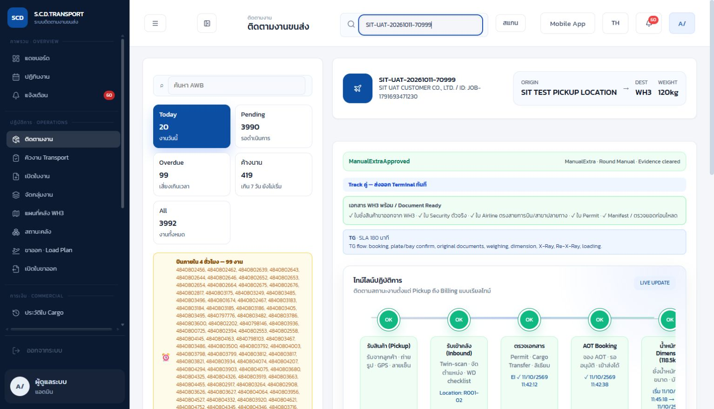
12. ปิดจบงาน / ส่งต่อ Billing
หลัง Terminal ทำครบ ระบบเปลี่ยนงานเป็นพร้อมตรวจเอกสารวางบิล
- Terminal กรอกข้อมูลน้ำหนัก / dimension / X-Ray / Loading detail
- คลัง/Terminal กรอก Tray/Pallet/Lot ใน Close tab
- ระบบอัปเดต status ตาม workflow เช่น TerminalArrived, WeightDimensionRecorded, XRayPassed, LoadingDetailCompleted
- เมื่อครบเงื่อนไข งานเข้า Billing queue เป็น ReadyForBilling หรือ PendingBillingReview
- Billing เห็นงานในรายการ “งานรอวางบิล” และเริ่มตรวจเอกสาร
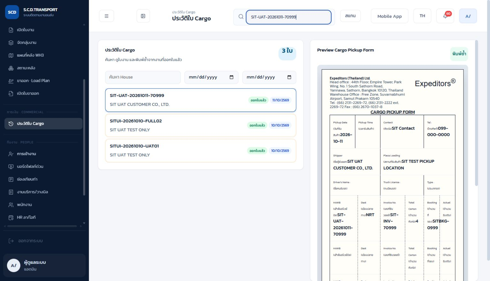
13. Billing / เอกสารวางบิล
ตรวจเอกสาร สร้างใบแจ้งหนี้ฉบับร่าง ส่งอีเมล และปิดสถานะ Billed
| ขั้นตอน | ในระบบทำอะไร | ผลลัพธ์ |
|---|---|---|
| จัดกลุ่มงาน | เลือกงานพร้อมวางบิลและจัดกลุ่มตามลูกค้า/รอบ | สร้าง batch สำหรับตรวจเอกสาร |
| ตรวจเอกสาร | กด “เอกสารพร้อม / Reviewed” พร้อม note | สถานะ BillingReviewed / PendingBillingReview |
| สร้างใบแจ้งหนี้ฉบับร่าง | กรอกหรือ generate invoice id เช่น INV-2026-xxxx | ได้เลขใบแจ้งหนี้ฉบับร่าง |
| ส่งอีเมล | ส่ง Billing email ผ่าน webhook/provider | EmailQueued / InvoiceSent |
| ปิด Billed | mark billed เมื่อส่งและตรวจครบ | งานหายจากคิวรอวางบิลและเก็บใน history |
ข้อมูลที่ต้องกำหนดก่อนเปิดใช้งานจริง
- Billing email provider ใช้ n8n/LINE/email webhook ตัวไหน
- ต้อง CC ใคร
- ไฟล์แนบที่บังคับต้องมีคืออะไร: ใบชั่ง, Cargo Transfer, Loading Detail, รูปหน้างาน, Invoice PDF
- ใครมีสิทธิ์ hold / unhold / mark billed
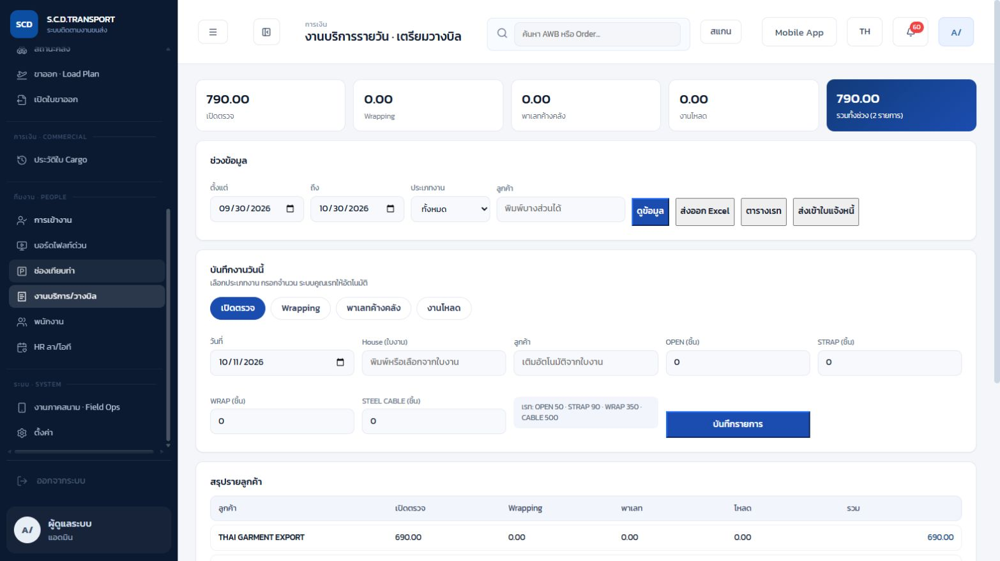
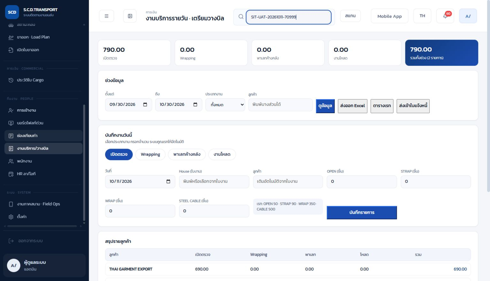
14. HR / การลา / OT / แก้ไขเวลา
โมดูล HR foundation สำหรับคำขอลา โอที แก้ไขเวลา แจ้งเตือน และ payroll profile
พนักงานทำอะไรได้
- ส่งคำขอลา: sick, personal, vacation, other
- ส่งคำขอโอที: วันที่, เวลาเริ่ม-จบ, งานอ้างอิง
- ส่งคำขอแก้ไขเวลาเข้า/ออกงาน พร้อมเหตุผล
- ดู quota / คำขอของตัวเอง / สถานะอนุมัติ
หัวหน้า/Admin ทำอะไรได้
- ตั้งค่า profile พนักงาน: แผนก ตำแหน่ง supervisor branch
- ตั้งค่า check-in location และ radius
- อนุมัติ/ไม่อนุมัติ leave, OT, attendance correction
- ตั้งค่า payroll profile และ run payroll foundation
Flow การลา
- พนักงานเปิดหน้า HR เลือกแท็บ “ขอลา”
- เลือกประเภทลา วันเริ่ม วันสิ้นสุด จำนวนวัน และเหตุผล
- ส่งคำขอ ระบบแจ้งหัวหน้าหรือผู้อนุมัติ
- หัวหน้า/Admin อนุมัติหรือ reject พร้อม note
- พนักงานเห็นสถานะในรายการคำขอและ notification
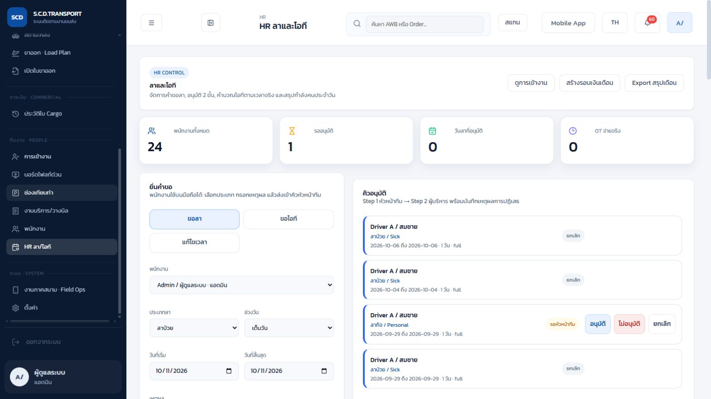
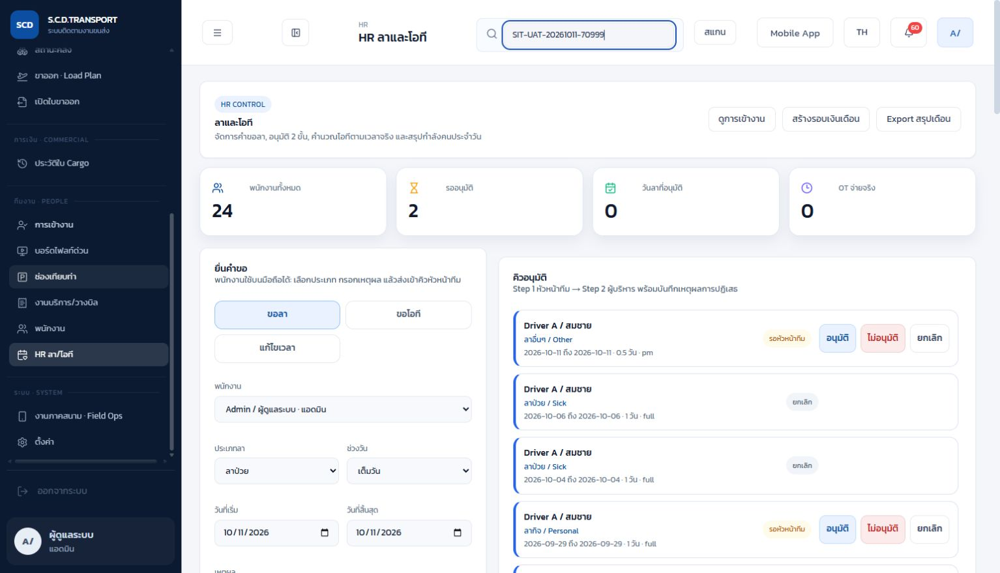
15. Attendance / การเข้างาน
เช็คอิน/เช็คเอาต์พร้อมรูปและ GPS รวมถึงแผนที่การเข้างาน
- พนักงานเช็คอินพร้อมรูป, GPS, zone, job type
- เช็คเอาต์พร้อมรูปและ GPS
- ระบบตรวจ location radius ถ้าเปิด enforce assigned locations
- ถ้าอยู่นอกจุดที่กำหนด ระบบให้ส่งคำขอแก้ไขเวลาแทน
- Admin/หัวหน้าดูแผนที่จุดเข้าออกงานและ reallocations ได้
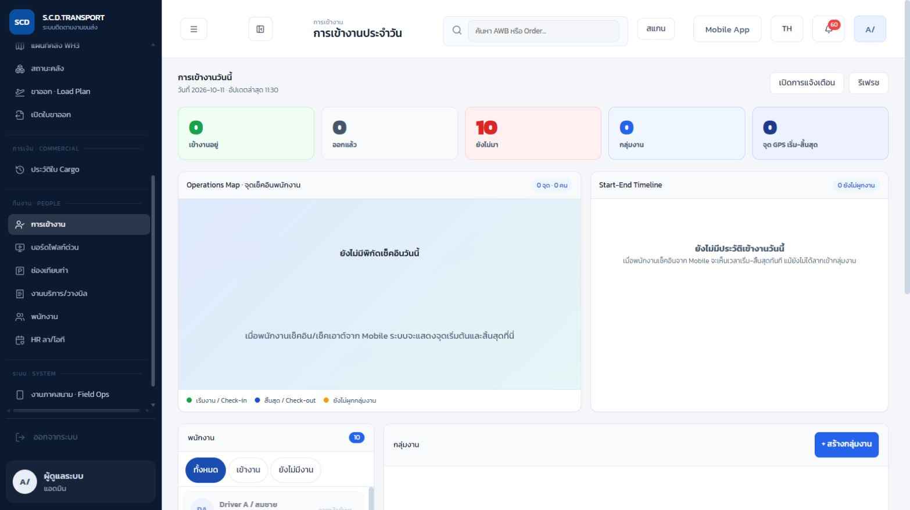
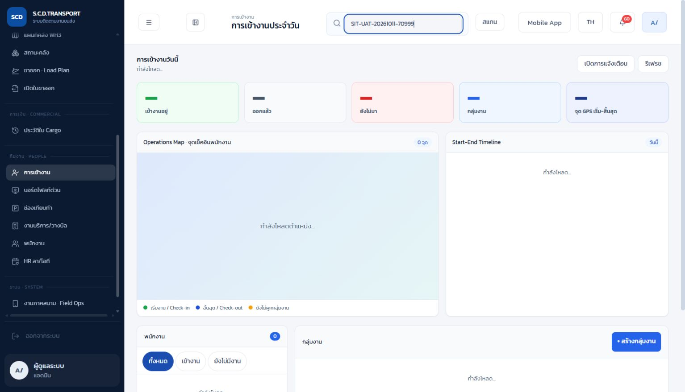
16. ตารางงาน / Calendar / Staff
ดูงานรายเดือน งานขาเข้า/ขาออก และภาพรวมพนักงาน
Calendar ทำอะไรได้
- ดูงานรายเดือน
- แยกสีสถานะงาน: inbound, outbound, billing, risk
- กดเดือนก่อนหน้า/เดือนปัจจุบัน/เดือนถัดไป
- ดูจำนวนงานในแต่ละวัน
Staff ทำอะไรได้
- ดูพนักงานทั้งหมดแยก role
- ดูงานทั้งหมด/งานสำเร็จ/เวลาเฉลี่ย/KPI
- เชื่อมไปหน้า Attendance เพื่อดูการเข้างาน
- ใช้ประกอบการจัดคน/จัดกลุ่มงาน
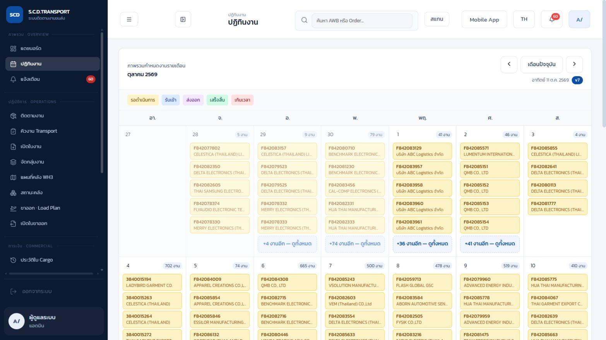
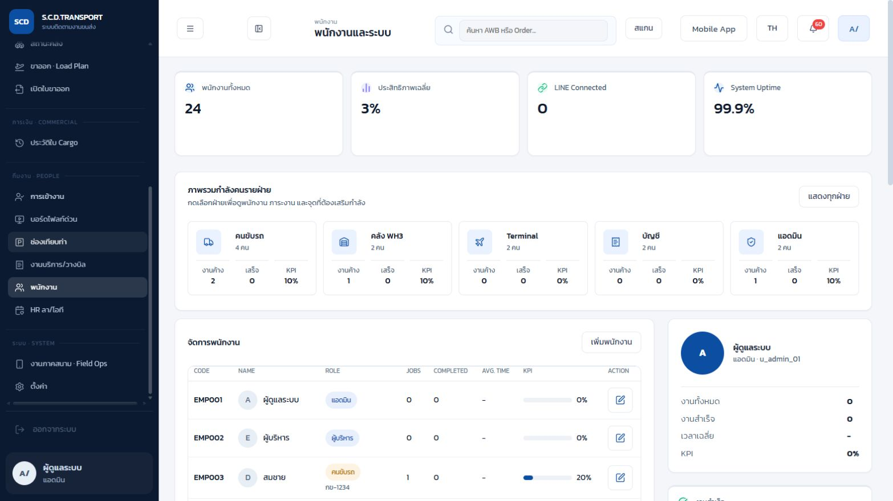
17. หน้าจอจริงจาก Production หลัง Login Admin
แคปจาก https://scd-transport.onrender.com/legacy/index.html วันที่ 11 ตุลาคม 2569 เวลาโดยประมาณ 11:30 น. ใช้ตรวจระบบแบบอ่านอย่างเดียว ไม่ได้กดปุ่มที่เปลี่ยนสถานะงาน เช่น ยืนยัน, ลบ, บันทึก, ส่งอีเมล หรือปิดงาน
งานทั้งระบบที่ Dashboard รายงาน
รอ CS ยืนยันในช่วงวันที่เลือก
งานเสี่ยงที่ Dashboard แสดง
Readiness ตอนตรวจจริง
สรุปสถานะที่เห็นจริง
ใช้เป็นประเด็นเปิดประชุมก่อน demo flow จริง
- ปุ่ม ล้างงานทั้งหมด มีบน Dashboard แต่ควรใช้เฉพาะเมื่อกำหนดช่วงเวลาและเจ้าของข้อมูลชัดเจน
- หน้า Transport Queue มี รอ CS อนุมัติ 3,989 งาน / 141,314 ชิ้น และมีปุ่ม ยืนยันทั้งหมดที่กรอง แปลว่าระบบทำ bulk confirm ได้ แต่ต้องกำหนดสิทธิ์/กติกาก่อนใช้จริง
- หน้าเปิดใบงานแสดงว่า ไม่มีงานที่ CS อนุมัติรอเปิดใบ Cargo เพราะงานส่วนใหญ่ยังค้างอยู่ขั้น CS
- Warehouse Map/Status พร้อมแสดงผัง WH3, zone, location และความจุ โดยข้อมูลจริงตอนตรวจเป็น 0 พาเลทในคลัง / 114 ช่องว่าง
- Load Plan และเปิดใบขาออกมีหน้าสำหรับ Import CSV, ทำ Cargo Transfer, ตรวจเอกสาร และไปขั้น Terminal โดยรอบตรวจไม่มี load plan ขาออกวันนี้ในคิวจริง
- Billing มีหน้า service charge/เตรียมวางบิลแล้ว เห็น 2 รายการ รวม 790 บาท และมีรายการ TEST-MOBILE ค้างในข้อมูล
- HR, Attendance, Calendar, Staff ใช้งานได้ และควรกำหนดร่วมกันว่าจะเปิดใช้งานพร้อม Go-live รอบแรกหรือแยกเป็น Phase ถัดไป
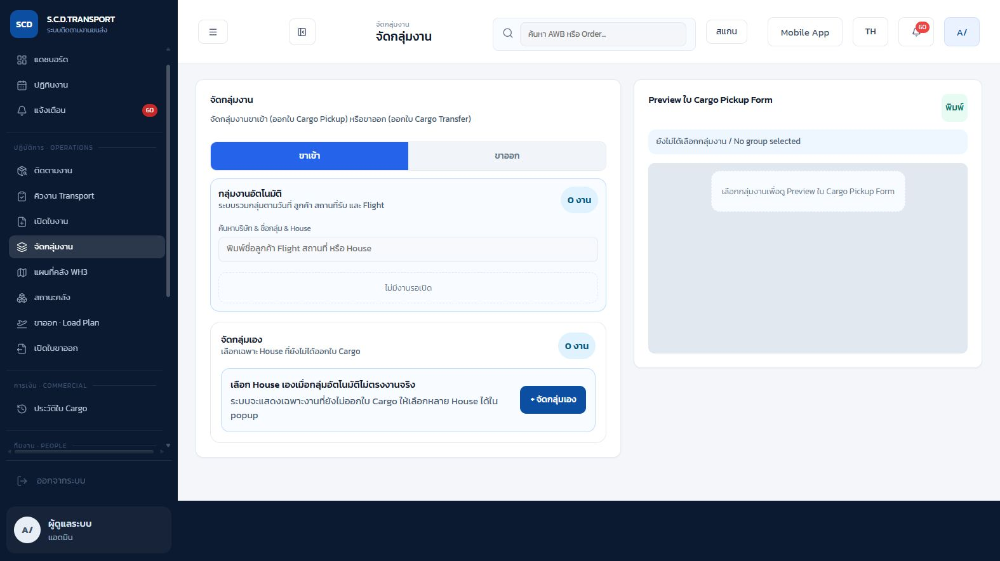
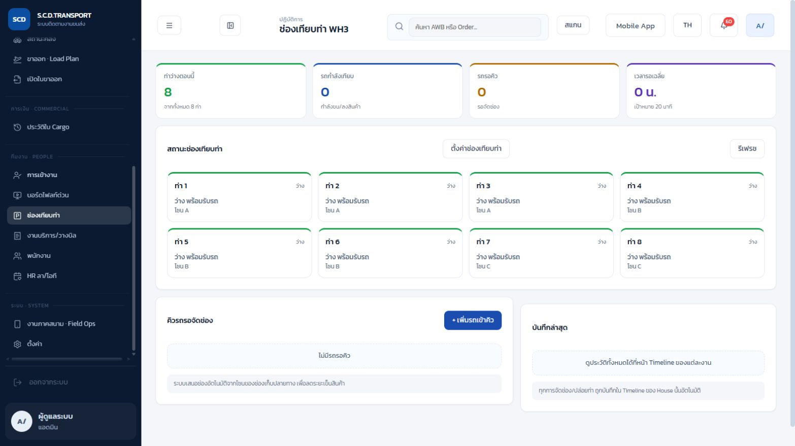
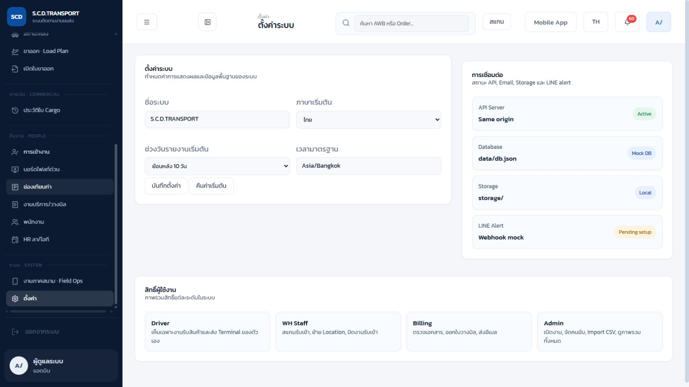
18. UAT จริง Full Loop — 11 ตุลาคม 2569
ทดสอบบนระบบ production จริง โดยสร้าง House จำลองชื่อชัดเจนว่า SIT-UAT-20261011-70999 แล้วเดินสถานะตั้งแต่ Transport รับงาน, CS ยืนยัน, เปิดใบ Cargo, Driver รับสินค้า, กลับ WH3, เข้าคลัง, ย้าย location, เตรียมขาออก, ไป Terminal, ชั่งน้ำหนัก, X-Ray, ปิด Loading Detail, วางบิล, HR และ Attendance.
House ที่ใช้ทดสอบจริง
Flight จำลอง ใช้ policy WH3 14 ชั่วโมง
ใบแจ้งหนี้ฉบับร่างที่สร้างจาก Billing flow
สถานะสุดท้ายหลังปิดวางบิล
ผลลัพธ์หลักที่ยืนยันได้
อ้างอิงไฟล์หลักฐานการทดสอบ: screenshots-2026-10-11/uat-full-loop-SIT-UAT-20261011-70999-completed.json
- Transport / CS / Cargo: เพิ่มงานด่วนได้, CS confirm ได้, เปิดใบ Cargo ได้ และงานถูกส่งต่อให้ Driver ใช้งานต่อ
- Driver mobile: check-in หน้าลูกค้า, เริ่มโหลด, complete pickup, แนบหลักฐานรูป/ลายเซ็น/เอกสาร และกลับ WH3 ได้
- WH3 inbound: รับใบตรวจปล่อย, ตรวจเอกสาร, เปิดงานรับเข้า, scan House, twin scan ลง location, ย้ายจาก R001-01 ไป R001-02 และปิดรับเข้าได้
- WH3 outbound: ตรวจเอกสารก่อนออกครบ 5 รายการ, ออก Cargo Transfer, confirm location, picking, EI approve, AOT booking/approve และ loaded from WH3 ได้
- Terminal: arrived terminal, start weighing, บันทึกน้ำหนัก 118.5, dimension 120x80x90, X-Ray passed, loading detail completed และ SLA เป็น WithinSLA
- Billing: เอกสารพร้อมครบ, ตรวจเอกสารแล้ว, สร้างใบแจ้งหนี้ฉบับร่าง INV-2026-0001, ส่งคิวอีเมลเป็น EmailQueued, แล้วปิดเป็น Billed
- HR / Attendance: ยื่นใบลาได้สถานะ pendingLead, check-in แล้ว check-out ได้ใน record เดียวกัน ATT-1791694042754-df661a
ไทม์ไลน์ผลทดสอบ
สถานะเหล่านี้เกิดกับ House เดียวกัน ระหว่าง 11:37-11:47 น. เวลาไทยโดยประมาณ
| ช่วงงาน | สิ่งที่ทดสอบ | ผล |
|---|---|---|
| 01 Transport | เพิ่มงานด่วน, CS confirm, เปิดใบ Cargo | ผ่าน |
| 02 Driver | check-in, loading, complete pickup, กลับ WH3 พร้อมหลักฐาน | ผ่าน |
| 03 WH3 Inbound | ตรวจเอกสาร, scan, ลง location, ย้าย location, ปิดรับเข้า | ผ่าน |
| 04 WH3 Outbound | pre-dispatch docs, Cargo Transfer, picking, EI, AOT, loaded | ผ่าน |
| 05 Terminal | arrival, weighing, dimension, X-Ray, loading detail, close | ผ่าน |
| 06 Billing | ตรวจเอกสาร, สร้างใบแจ้งหนี้ฉบับร่าง, ส่งคิวอีเมล, ปิดเป็น Billed | ผ่าน |
| 07 People | HR leave request และ Attendance check-in/out | ผ่าน |
Flow ละเอียดแบบไล่ยาว ตั้งแต่รับงานถึงวางบิล
อ่านส่วนนี้เป็น script สำหรับเล่าในประชุมได้เลย: เริ่มจากงานเข้า Transport แล้วจบที่ Billed พร้อม HR/Attendance ประกอบ
| # | โมดูล/หน้าที่เกี่ยวข้อง | Action ที่ทดสอบ | สถานะ/ผลลัพธ์ที่ได้ | หลักฐานที่ควรชี้ในประชุม |
|---|---|---|---|---|
| 1 | Transport Queue | เพิ่มงานด่วนเข้าระบบด้วย House SIT-UAT-20261011-70999 | สร้าง job ได้ สถานะเริ่มต้น Pending | Dashboard/Tracking แสดงงานในระบบ |
| 2 | CS Queue | CS ยืนยันงานและหลักฐานจากลูกค้า | csConfirmed=true, approval เป็น ManualExtraApproved | Tracking แสดงสถานะ ManualExtraApproved |
| 3 | เปิดใบงาน Cargo | เปิดใบ Cargo จากงานที่ผ่าน CS แล้ว | มี cargoIssuedAt, cargoFormMode เป็น AdminPrepared | Cargo History ค้น House ได้หลังจบงาน |
| 4 | Driver Mobile | คนขับ check-in ถึงจุดรับสินค้า | สถานะ ArrivedAtPickup, มีเวลาและ GPS | JSON หลักฐาน + Mobile/Tracking |
| 5 | Driver Mobile | เริ่มโหลดสินค้าหน้าลูกค้า | สถานะ Loading | Timeline งาน |
| 6 | Driver Mobile | complete pickup พร้อมหลักฐาน | สถานะ PickedUp, แนบรูป/เอกสาร/ลายเซ็น | billingDocuments มีไฟล์ field evidence |
| 7 | Driver → WH3 | คนขับกลับถึง WH3 | สถานะ AwaitingReleaseDocument | Tracking timeline |
| 8 | WH3 Inbound | รับใบตรวจปล่อย/เอกสารปล่อยสินค้า | สถานะ WaitingForDock | releaseDocumentReceivedAt ใน JSON |
| 9 | WH3 Inbound | ตรวจเอกสารรับเข้า | สถานะ DocumentChecked | inboundDocStatus เป็น Found |
| 10 | WH3 Inbound | เปิดงานรับเข้าคลัง | สถานะ InboundOpened | inboundOpenedAt ใน JSON |
| 11 | WH3 Scan | Scan หรือพิมพ์ House เข้าคลัง | สถานะ ReadyForTerminal, scannedPieceCount = 4 | Tracking + JSON |
| 12 | Warehouse Location | Twin scan ลงตำแหน่งเก็บแรก | locationId เริ่มที่ R001-01 | Warehouse/JSON |
| 13 | Warehouse Move | ย้ายสินค้าในคลัง | ย้ายไป R001-02, มี locationMoveNote | Tracking แสดง Location R001-02 |
| 14 | WH3 Inbound Close | ปิดงานรับเข้า | สถานะพร้อมส่งออก ReadyForTerminal | inboundClosedAt ใน JSON |
| 15 | WH3 Pre-dispatch | ตรวจเอกสารก่อนออกจาก WH3 ครบ 5 รายการ | wh3Documents.ready=true, missing = [] | Tracking แสดง Document Ready |
| 16 | Cargo Transfer | ออก Cargo Transfer และแนบ Permit | cargoTransferIssuedAt และ permitAttached=true | billingDocuments มี CargoTransferPermit |
| 17 | Outbound Location | ยืนยันตำแหน่งสินค้าเพื่อเบิกออก | สถานะ OutboundLocated | outboundFoundAt ใน JSON |
| 18 | Outbound Picking | Picking ออกจาก WH3 | สถานะ OutboundPicking | outboundPickedAt ใน JSON |
| 19 | EI / Customer | EI approve/sign proof | eiApproved=true, barcode reference EI-70999 | ไฟล์ EISignProof ใน billingDocuments |
| 20 | AOT Booking | จองคิวรถเข้า Terminal | สถานะ AOTQueueBooked | terminalWorkflowEvents: BookingRequested |
| 21 | AOT Approve | Terminal/AOT อนุมัติคิว | สถานะ AOTQueueApproved | terminalWorkflowEvents: TerminalConfirmed |
| 22 | WH3 → Terminal | โหลดสินค้าออกจาก WH3 | สถานะ GoodsLoaded | PreLoadPhoto และ goodsLoadedAt |
| 23 | Terminal | รถถึง Terminal | สถานะ TerminalArrived | terminalArrivedAt ใน JSON |
| 24 | Terminal Weighing | เริ่มชั่งน้ำหนัก | weighStartedAt ถูกบันทึก | Terminal workflow event |
| 25 | Terminal Weight/Dimension | บันทึกน้ำหนักและมิติ | 118.5 และ 120x80x90, สถานะ WeightDimensionRecorded | Tracking timeline/JSON |
| 26 | Terminal X-Ray | บันทึกผล X-Ray | xrayStatus=Passed, requiresRescan=false | terminalStatus = XRayPassed |
| 27 | Terminal Close Detail | อัปโหลด/บันทึก Loading Detail | loadingDetailUploaded=true, closingStatus=LoadingDetailCompleted | ไฟล์ LoadingDetail_1 และ PalletPhoto_1 |
| 28 | Billing Review | Billing ตรวจเอกสารครบ | billingReviewStatus=Reviewed, blockers=[] | billingDocuments.ready=true |
| 29 | Billing Invoice | สร้างใบแจ้งหนี้ฉบับร่าง | ได้ INV-2026-0001 | เลขใบแจ้งหนี้ในหลักฐานการทดสอบ |
| 30 | Billing Email | ส่งคิวอีเมลวางบิล | สถานะ EmailQueued หรือรอส่งอีเมล | ผลการทดสอบ Billing |
| 31 | Billing Close | ปิดเป็น Billed | สถานะสุดท้าย Billed, readyForBilling=false | Tracking พบงาน, Billing queue ไม่ค้าง |
| 32 | HR | สร้างคำขอลาเพื่อทดสอบ People module | leave request LV-1791694035173-87a2c7, status pendingLead | หน้า HR + JSON |
| 33 | Attendance | check-in พนักงาน | attendance ATT-1791694042754-df661a, status checkin | หน้า Attendance |
| 34 | Attendance | check-out record เดิม | status checkout, Dashboard เห็นออกแล้ว 1 คน | Dashboard/Attendance map |
อธิบายภาพหลังทดสอบ: ทำไมบางหน้าหา House ไม่เจอ
จุดนี้สำคัญสำหรับประชุม เพราะถ้า search ในคิวแล้วไม่เจอ อาจถูกเข้าใจผิดว่า flow หาย ทั้งที่จริงคือปิดงานเสร็จแล้ว
| หน้า | ผล search House หลังจบ UAT | เหตุผล | ควรใช้ภาพไหนประกอบ |
|---|---|---|---|
| Tracking | พบ House โดยตรง | Tracking เป็นหน้าประวัติ/สถานะรวม จึงยังเรียกดูงานที่จบแล้วได้ | uat-house-screens/02-tracking-search-house.jpg |
| Cargo History | พบ House โดยตรง | ใบงานถูกเปิดแล้ว จึงอยู่ในประวัติ Cargo | uat-house-screens/05-cargo-history-search-house.jpg |
| Field Ops | พบ House โดยตรง | Field Ops ใช้ดู workspace ของ flow รวมและค้นงานได้ | uat-house-screens/06-field-ops-search-house.jpg |
| CS Queue | ไม่พบในคิว | งานผ่าน CS แล้ว จึงไม่อยู่ในคิวรอ CS | CS Queue production screenshot + Tracking proof |
| เปิดใบงาน | ไม่พบในคิว | เปิดใบ Cargo ไปแล้ว จึงไม่ค้างในคิวเปิดใบ | Open Cargo screenshot + Cargo History proof |
| WH3 Queue | ไม่พบในคิว | รับเข้าและปิด outbound แล้ว จึงไม่ค้างในคิวคลัง | Tracking location R001-02 + JSON |
| Load Plan / Outbound | ไม่พบในคิว | โหลดออกจาก WH3 และถึง Terminal แล้ว จึงไม่ค้างในคิวขาออก | Tracking timeline + Outbound screenshot |
| Billing Queue | ไม่พบในคิวพร้อมวางบิล | ปิดเป็น Billed แล้ว งานจึงไม่ค้างในคิวรอตรวจ/รอส่งบิล | Tracking + JSON invoiceId INV-2026-0001 |
ข้อสังเกตด้านเสถียรภาพและแผนติดตาม
เกิด 1 ครั้งระหว่างขั้นเข้า Terminal ที่ /api/outbound/load-bay แล้วทดสอบซ้ำสำเร็จ
| หัวข้อ | รายละเอียดสำหรับติดตามหลัง UAT |
|---|---|
| อาการ | ระบบตอบ 502 Bad Gateway ชั่วคราวที่ /api/outbound/load-bay ระหว่างขั้นเข้า Terminal / load bay |
| ผลกระทบ | คำสั่งแรกไม่สำเร็จ ผู้ใช้ต้องกดทำซ้ำ; ในรอบทดสอบทำซ้ำแล้ว flow ต่อจนจบครบ จึงยังไม่พบข้อมูลสูญหาย |
| ความเสี่ยง | ถ้าเกิดกับงานจริงช่วงส่งสนามบิน อาจทำให้ทีมเข้าใจว่าสถานะไม่บันทึก หรือกดซ้ำโดยไม่แน่ใจว่า request แรกสำเร็จหรือไม่ |
| สิ่งที่ควรตรวจ | บันทึกระบบ, timeout, ความหน่วงฐานข้อมูล, ขนาดข้อมูลที่ส่ง และกลไกป้องกันการบันทึกซ้ำของคำสั่งนี้ |
| ข้อเสนอ UX | ปุ่มควร disable ระหว่างส่งคำสั่ง, แสดง loading ชัดเจน, ถ้า 502 ให้แสดงข้อความ “ระบบขัดข้องชั่วคราว ลองใหม่อีกครั้ง โดยไม่ต้องกรอกข้อมูลใหม่” |
| ข้อเสนอระบบหลังบ้าน | เพิ่ม idempotency key ต่อ action, ผูก log กับ House และทำ error response ให้ frontend แสดงข้อความที่เข้าใจง่าย |
| ระดับความสำคัญ | Medium-High เพราะไม่กระทบผล full loop ในรอบนี้ แต่เป็นขั้นตอนสำคัญก่อน Terminal/Flight |
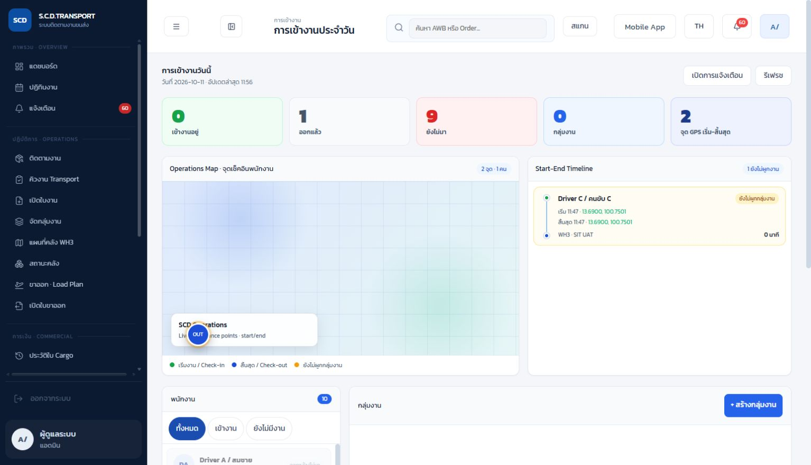
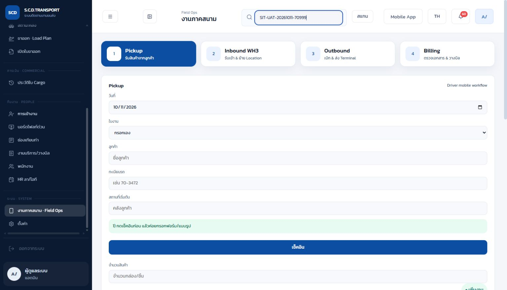
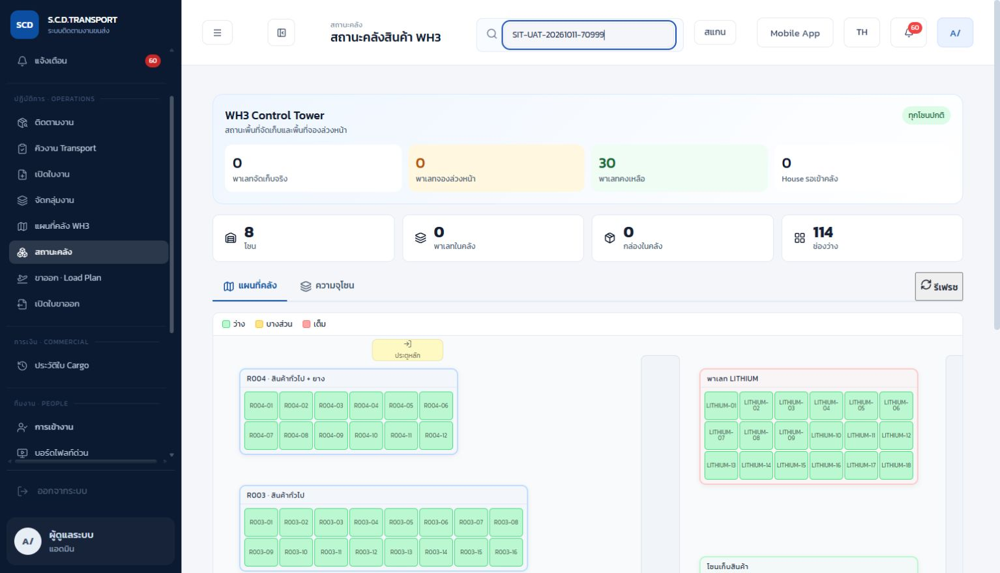
19. สิ่งที่ควรปรับปรุงเพื่อใช้งานจริง
จากการทดสอบ full loop ระบบสามารถเดินงานครบตั้งแต่รับงานจนปิดวางบิลได้แล้ว และมีการปรับส่วน production-readiness เพิ่มเติมหลังทดสอบ เพื่อให้การใช้งานจริงปลอดภัยขึ้นเมื่อมีข้อมูลจริง/ลูกค้าจริง
ปรับแก้แล้วเพื่อให้พร้อมใช้งานจริง
รายการนี้ถูกปรับในระบบแล้วหลังพบจาก full loop test
| ลำดับ | เรื่องที่ปรับ | เหตุผลจากการทดสอบ | ผลลัพธ์ที่ได้ |
|---|---|---|---|
| 1 | เสถียรภาพขั้น Terminal / load bay | พบ 502 Bad Gateway ชั่วคราว 1 ครั้งที่ขั้นเข้า Terminal แต่ retry แล้ว flow ต่อจนจบ | เพิ่มข้อความ error ภาษาใช้งานจริง, retry-safe recovery และกันบันทึกซ้ำที่ endpoint load bay |
| 2 | CS bulk confirm | ปุ่มยืนยันทั้งหมดที่กรองช่วยลดงานซ้ำ แต่มีความเสี่ยงหากกดผิดชุด | เพิ่ม preview จำนวนงาน, จำนวนชิ้น, จำนวนลูกค้า, ตัวอย่าง House และบังคับพิมพ์จำนวนซ้ำเมื่อเกิน 50 งาน |
| 3 | ปิด Billing เป็น Billed | หลังปิด Billed งานจะหายจากคิววางบิลทันที ผู้ใช้ต้องเข้าใจผลลัพธ์ก่อนกด | เพิ่ม confirmation ระบุเลข invoice และอธิบายว่าต้องดูย้อนหลังจาก Tracking / Cargo History / รายงานวางบิล |
| 4 | โหลดขึ้นรถและยืนยันถึง Terminal | เป็น action ที่เปลี่ยนสถานะสำคัญใน flow outbound | เพิ่ม confirmation ต่อ House ก่อนบันทึก เพื่อกันกดผิดระหว่างงานเร่ง |
| 5 | ค้น House ที่ปิดแล้วในคิว | เมื่อ House ถูกปิด Billed แล้วจะไม่อยู่ใน CS Queue / Billing Queue ทำให้เข้าใจผิดว่างานหาย | เพิ่มข้อความอธิบายเมื่อค้นในคิวไม่เจอ แต่พบ House ในระบบ พร้อมทางไป Tracking / Cargo History |
| 6 | ล้างงานเก่า เหลือเฉพาะงานวันนี้ | ต้องเริ่มใช้งานจริงโดยไม่ให้รายการเก่าปนกับงานประจำวันที่ต้องดูแล | เพิ่มคำสั่ง Admin-only สำหรับล้างงานก่อนวันนี้ โดยเก็บงานวันที่ปัจจุบันและข้อมูลตั้งค่าหลักไว้ |
| 7 | กติกายกเลิกงาน | การยกเลิกงานมีผลต่อคิวและรายงาน จึงต้องมีผู้รับผิดชอบชัดเจน | Admin ทำได้ทันที ส่วนผู้มีสิทธิ์ดูแล role อื่นต้องยืนยันจากหัวหน้าก่อนดำเนินการ |
รายการที่ต้องตัดสินใจก่อน Go-live
ไม่ใช่ข้อผิดพลาดของระบบ แต่ต้องใช้คำตอบจากทีมปฏิบัติการเพื่อเปิดใช้งานจริงให้ตรงหน้างาน
| เรื่อง | คำตอบที่ต้องการ | ใช้กำหนดในระบบ |
|---|---|---|
| งานค้างเดิม | กำหนดเวลาที่ Admin จะกดล้างงานเก่า และยืนยันว่าให้เหลือเฉพาะงานของวันนั้น | Dashboard, CS Queue, Risk Alert และรายงานเริ่มต้น |
| สิทธิ์ role production | Admin กำหนดสิทธิ์หลักได้เท่านั้น ส่วนการยกเลิกโดย role ดูแลต้องมีหัวหน้ายืนยัน ยกเว้น Admin ที่ลบได้โดยตรง | Role guard และ action permission |
| Checklist เอกสาร outbound | เอกสารบังคับของ TG/TGINT/BFS และเอกสารแยกตามลูกค้า/ปลายทาง | Doc validation ก่อนออกสนามบินและก่อนวางบิล |
| Billing email จริง | ผู้รับ, CC, provider, template, ไฟล์แนบ และเงื่อนไขส่งซ้ำ | การส่งอีเมลวางบิลจริงและ audit trail |
| SLA / Alert | เกณฑ์เตือนแต่ละ Terminal, flight C/K, กลุ่ม LINE/n8n และเวลาที่ต้องแจ้งเตือน | แจ้งเตือนงานเสี่ยงและ no-miss flight |
รายการที่ต้องกำหนดตามข้อมูลจริงของลูกค้า
ไม่ใช่ข้อผิดพลาดของระบบ แต่ต้องใช้ข้อมูลจริงก่อนเปิดใช้งาน
- ตั้งค่า Dock 1-11, zone, rack, lithium/WD และ capacity ตามผังคลังจริง
- ยืนยัน SLA แต่ละ Terminal และเงื่อนไข no-miss flight สำหรับ C/K หรือ flight สำคัญ
- กำหนดรายการเอกสารบังคับแยกตามลูกค้า/สายการบิน/ปลายทาง
- กำหนดรายชื่อผู้รับอีเมล Billing, CC, format invoice และไฟล์แนบ
- กำหนดกลุ่ม LINE/n8n สำหรับ alert งานเสี่ยง, งานตกไฟลท์, เอกสารไม่ครบ และ billing failed
- ตัดสินใจว่า HR/Attendance จะเปิดพร้อมรอบแรกหรือเปิดเป็น Phase ถัดไป
20. รายการที่ต้องยืนยันร่วมกันก่อน Go-live
จากการทดสอบ full loop ระบบทำงานครบตั้งแต่รับงานจนวางบิลแล้ว รายการด้านล่างไม่ใช่ flow ที่ขาด แต่เป็นข้อมูลธุรกิจ/สิทธิ์/นโยบายที่ต้องกำหนดให้ตรงกับการทำงานจริงของ S.C.D.
สรุปสิ่งที่ระบบทำได้จริงแล้ว
ใช้เป็นข้อความยืนยันกับลูกค้าได้
| ส่วนงาน | สถานะจากการทดสอบ | หมายเหตุ |
|---|---|---|
| Transport / CS / Cargo | ทำได้จริง | เพิ่มงาน, CS ยืนยัน, เปิดใบ Cargo และค้นประวัติได้ |
| Driver Mobile | ทำได้จริง | รองรับ scan และพิมพ์ House แทน scan |
| WH3 Inbound / Warehouse Move | ทำได้จริง | รับเข้า, ตรวจเอกสาร, ลง location และย้าย location ได้ |
| Outbound / Terminal | ทำได้จริง | ออก Cargo Transfer, AOT, ชั่งน้ำหนัก, X-Ray และปิด loading detail ได้ |
| Billing | ทำได้จริง | ตรวจเอกสาร, สร้างใบแจ้งหนี้ฉบับร่าง, ส่งคิวอีเมล และปิด Billed ได้ |
| HR / Attendance | ทำได้จริง | สร้างใบลาและบันทึก check-in/check-out ได้ |
| Dashboard / Calendar / Staff | ทำได้จริง | แสดงภาพรวม, ตารางงาน และข้อมูลทีมได้ |
21. วิธีนำเสนอประชุมที่แนะนำ
- เปิดหน้า Login จริงและอธิบาย role
- เข้า Admin/Executive เพื่อโชว์ Control Tower และ Readiness
- เข้า CS Queue เพื่อโชว์การยืนยันแบบกลุ่มและ fallback พิมพ์แทน scan
- เข้า Transport เพื่อโชว์งานที่ผ่าน CS แล้วถึงเปิดใบได้
- เข้า Mobile/Driver เพื่อโชว์รับสินค้า ถ่ายรูป เซ็นชื่อ กลับ WH3
- เข้า WH3 เพื่อโชว์รับเข้า ย้าย location และ warehouse map
- เข้า Terminal เพื่อโชว์ AOT, ชั่งน้ำหนัก, X-Ray, close
- เข้า Billing เพื่อโชว์ตรวจเอกสาร, ใบแจ้งหนี้ฉบับร่าง, Email, Billed
- ปิดด้วย HR/Attendance/Calendar และคำถามที่ต้องตัดสินใจ